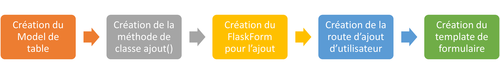
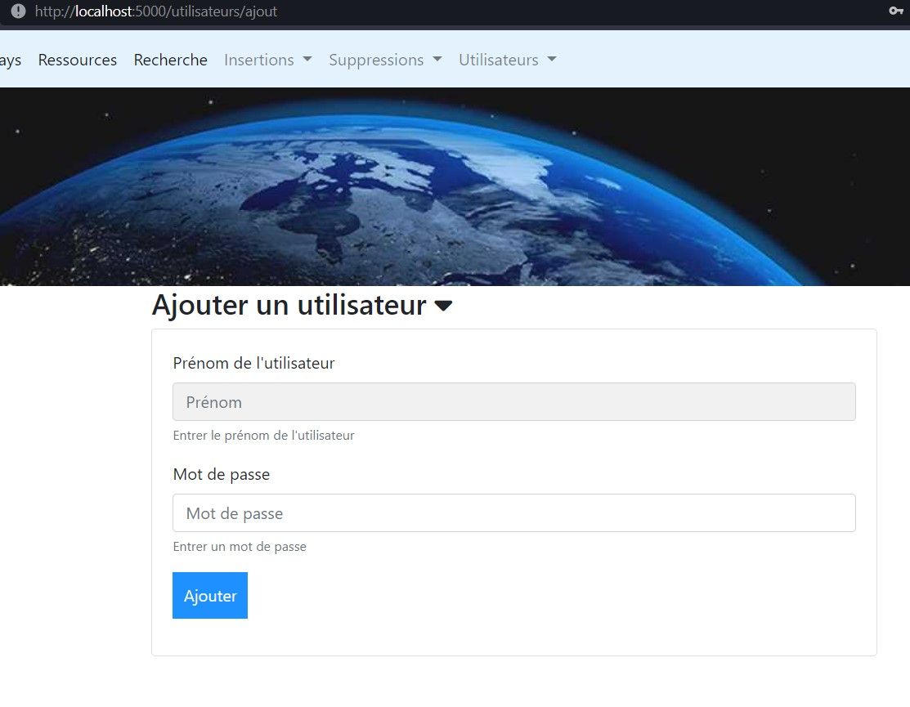
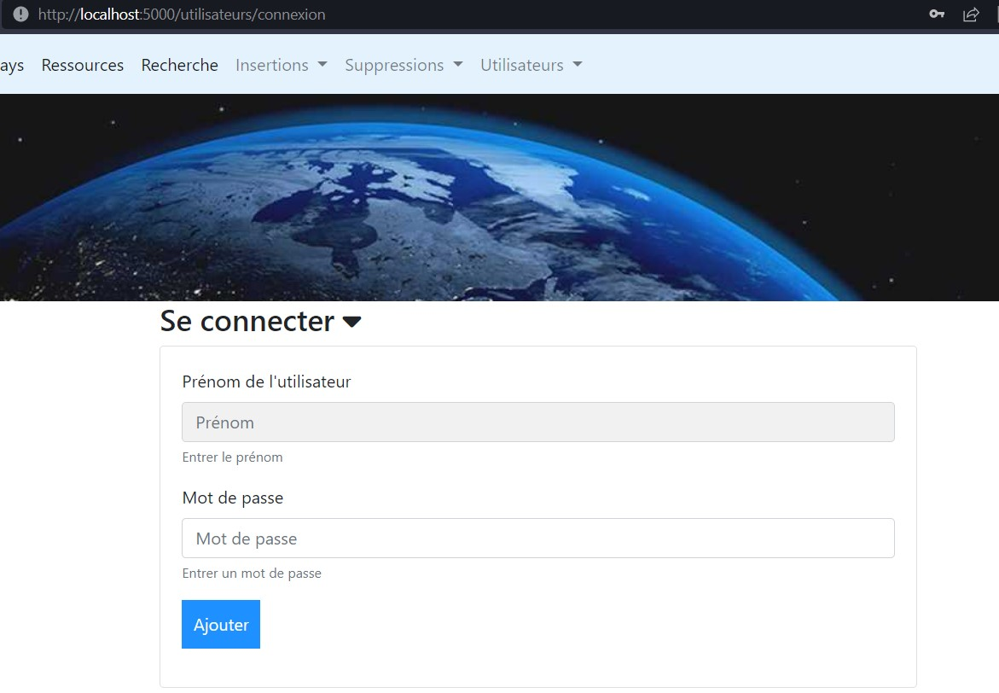

Créer et gérer des utilisateurs sur un site est courant et presque indispensable désormais. Ce cours se contentera d'apporter les bases de la gestion utilisateurs avec uniquement un prénom et un mot de passe. Rajouter d'autres attributs pourra facilement être fait ultérieurement une fois la méthodologie acquise.
Avant toutes choses, le modèle de la base de données actuellement utilisée pour le Factbook ne contient pas de tables pour la gestion utilisateurs. Deux solutions s'offrent alors:
users dans la base de données (c'est ce que nous ferons)Pour ajouter la table, exécuter dans un éditeru SQL la requête suivante:
CREATE TABLE "users" (
"id" INTEGER NOT NULL,
"prenom" TEXT NOT NULL,
"password" TEXT NOT NULL,
PRIMARY KEY("id" AUTOINCREMENT)
);
Vous pouvez sinon utiliser la base de données factbook_users.sqlite. Dans ce cas, il faut penser à changer dans le fichier .env le nom de la base de données et son chemin.
Comme pour les modèles de base de données ou les modèles de formulaires, les utilisateurs vont utiliser une méthode que l'on connaît déjà.

La première étape est la création de la class Users dans le module models/users.py. Grâce à la requête SQL ci-dessus, on en déduit les attributs de classe suivants:
# models/users.py
from ..app import app, db
class Users(db.Model):
__tablename__ = "users"
id = db.Column(db.Integer, unique=True, nullable=False, primary_key=True, autoincrement=True)
prenom = db.Column(db.Text, nullable=False)
password = db.Column(db.String(100), nullable=False)
Adossons à cette classe une méthode statique (avec le décorateur @staticmethod), qui nous permettra de créer facilement un utilisateur ainsi : User.ajout("jean", "mot de passe"). L'avantage de la méthode statique est qu'elle n'a pas besoin d'un objet User() existant pour fonctionner. On iteragit donc avec la classe sans que l'objet lui-même existe. On l'appele statique car elle n'est pas liée à une instance, contrairement aux méthodes classiques.
# models/users.py
from werkzeug.security import generate_password_hash
class Users(db.Model):
...
@staticmethod
def ajout(prenom, password):
erreurs = []
if not prenom:
erreurs.append("Le prénom est vide")
if not password or len(password) < 6:
erreurs.append("Le mot de passe est vide ou trop court")
unique = Users.query.filter(
db.or_(Users.prenom == prenom)
).count()
if unique > 0:
erreurs.append("Le prénom existe déjà")
if len(erreurs) > 0:
return False, erreurs
utilisateur = Users(
prenom=prenom,
password=generate_password_hash(password)
)
try:
db.session.add(utilisateur)
db.session.commit()
return True, utilisateur
except Exception as erreur:
return False, [str(erreur)]
Commentaires:
if unique > 0. Ici la clé n'est que le prénom, il faut bien entendu dans un contexte réel effectuer cette vérification sur une adresse mail par exemplegenerate_password_hash qui va, grâce à la chaîne de caractères fournit par l'utilisateur et à du sel, générate un hash que l'on pourra stcoker dans la base de données. Le seul moyen de retrouver la valeur du mot de passe sera d'avoir le bon sel et le bon mot de passe.A propos du sel Pour fonctionner, generate_password_hash a besoin d'une variable SECRET_KEY que l'on définit dans .env et dans config.py. Cette clé secrète doit être unique, non devinable et le plus complexe possible. ATtention, ne pas changer sa valeur durant la vie de l'application, sinon tout ce qui aura été hashé par l'application deviendra introuvable.
# .env
SECRET_KEY=duselnondevinableetunique
# config.py
...
class Config():
...
SECRET_KEY = os.environ.get("SECRET_KEY")
Maintenant que le modèle de users est fait et que sa méthode ajout a été développé, il faut désormais créer ce qui permettra d'exécuter cette méthode ajout, c'est à dire une route, qui renverra un formulaire permettant de saisir un prénom et un mot de passe.

Il faut débuter par la création du FlaskForm:
# models/formulaires.py
class AjoutUtilisateur(FlaskForm):
prenom = StringField("prenom", validators=[])
password = PasswordField("password", validators=[])
On découvre ici le PasswordField de Flask-WTF: il permettra de cacher le mot de passe saisi par des étoiles.
Ensuite, il faut créer la route ajout_utilisateur:
#routes/users.py
from flask import url_for, render_template, redirect, request, flash
from ..models.users import Users
from ..models.formulaires import AjoutUtilisateur
from ..utils.transformations import clean_arg
from ..app import app, db
@app.route("/utilisateurs/ajout", methods=["GET", "POST"])
def ajout_utilisateur():
form = AjoutUtilisateur()
if form.validate_on_submit():
statut, donnees = Users.ajout(
prenom=clean_arg(request.form.get("prenom", None)),
password=clean_arg(request.form.get("password", None))
)
if statut is True:
flash("Ajout effectué", "success")
return redirect(url_for("accueil"))
else:
flash(",".join(donnees), "error")
return render_template("pages/ajout_utilisateur.html", form=form)
else:
return render_template("pages/ajout_utilisateur.html", form=form)
Commentaire:
ajout() de Users sans avoir eu besoin d'instancier Users au préalable.Il reste à créer les templates HTML:
<!-- templates/partials/formulaires/ajout_utilisateur.html -->
<form action="{{url_for('ajout_utilisateur')}}" method="post" name="ajout_utilisateur">
{{ form.hidden_tag() }}
<div class="form-group">
<label for="prenom">Prénom de l'utilisateur</label>
{{ form.prenom(class_="form-control", placeholder_="Prénom") }}
<small id="prenom" class="form-text text-muted">Entrer le prénom de l'utilisateur</small>
</div>
<div class="form-group">
<label for="password">Mot de passe</label>
{{ form.password(class_="form-control", placeholder_="Mot de passe") }}
<small id="password" class="form-text text-muted">Entrer un mot de passe</small>
</div>
<p><input type="submit" value="Ajouter"></p>
</form>
<!-- templates/pages/ajout_utilisateur.html -->
<div class="col-sm-8">
<h3 data-toggle="collapse" data-target="#collapseExample" aria-expanded="false"
aria-controls="collapseExample">
Ajouter un utilisateur <i class="fa-solid fa-caret-down"></i>
</h3>
<div class="collapse show" id="collapseExample">
<div class="card card-body">
{% include "partials/formulaires/ajout_utilisateur.html" %}
</div>
</div>
</div>
Code concerné: Seance6/ajout_utilisateurs
Pour gérer les utilisateurs, il existe la librairie Flask-Login, qui va permettre de savoir, très simplement, pour chaque route, si un utilisateur est connecté ou non, quel est son identifiant, etc. Il permet également de créer des sessions utilisateurs et de poser les cookies nécessaires chez le client de manière à ce que la connexion reste établie. Pour l'installer, pip install flask-login.
Comme pour Flask avec app et Flask-SQLAlchemy avec db, il va falloir instancier Flask-Login dans app.py.
# app/app.py
from flask_login import LoginManager
...
login = LoginManager(app)
login va alors proposer 4 méthodes, dont certaines nous seront utiles:
is_authenticated: retourne True si l'utilisateur est connectéis_active: retourne True si l'utilisateur est connecté et a un compte valide (non suspendu, validé)is_anonymous: retourne True si l'utilisateur est anonymeget_id(): retourne une string qui identifie l'utilisateur connectéPour éviter à avoir à développer ces fonctionnalités de cnotre côté, Flask-Login propose le UserMixin, dont on fera hériter la classe Users:
# models/users.py
from flask_login import UserMixin
class Users(UserMixin, db.Model):
...
Les seules méthodes de classe que nous avons à développer pour permettre à Flask-Login de fonctionner sont les suivantes:
# models/users.py
from ..app import app, db, login
class Users(UserMixin, db.Model):
...
def get_id(self):
return self.id
@login.user_loader
def get_user_by_id(id):
return Users.query.get(int(id))
Commentaires:
get_id(self) est une redéfinition de la méthode LoginManager().get_id(). On indique ici quel est l'attribut de Users qu'il faut considérer comme identifiant unique pour Flask-Loginget_user_by_id() permet de récupérer un utilisateur à partir de son identifiantOn peut désormais utiliser la gestion des utilisateurs. A nouveau, pour permettre à l'utilisateur de se connecter, il faut faire les étapes habituelles de :
Users.identificationConnexionconnexion
La méthode statique Users.identification(prenom, mot_de_passe) permettra d'identifier l'utilisateur grâce au prénom et au mot de passe qu'il fournira dans le formulaire de connexion.
# models/users.py
from werkzeug.security import check_password_hash
class Users(UserMixin, db.Model):
...
@staticmethod
def identification(prenom, password):
utilisateur = Users.query.filter(Users.prenom == prenom).first()
if utilisateur and check_password_hash(utilisateur.password, password):
return utilisateur
return None
Commentaires:
Users.query.filter(Users.prenom == prenom, Users.password == password).first(). Werkzeug offre la méthode check_password_hash, c'est à dire qu'il va générer à nouveau un hash avec le mot de passe reçu par le formulaire de connexion, puis va le comparer au hash de l'utilisateur que l'on pense être le bon: si les deux hash correspondent, alors l'identification est correcteCréation du FlaskForm:
# models/formulaires.py
class Connexion(FlaskForm):
prenom = StringField("prenom", validators=[])
password = PasswordField("password", validators=[])
Création de la route de connexion:
# routes/users.py
from flask_login import login_user, current_user
@app.route("/utilisateurs/connexion", methods=["GET","POST"])
def connexion():
form = Connexion()
if current_user.is_authenticated is True:
flash("Vous êtes déjà connecté", "info")
return redirect(url_for("accueil"))
if form.validate_on_submit():
utilisateur = Users.identification(
prenom=clean_arg(request.form.get("prenom", None)),
password=clean_arg(request.form.get("password", None))
)
if utilisateur:
flash("Connexion effectuée", "success")
login_user(utilisateur)
return redirect(url_for("accueil"))
else:
flash("Les identifiants n'ont pas été reconnus", "error")
return render_template("pages/connexion.html", form=form)
else:
return render_template("pages/connexion.html", form=form)
login.login_view = 'connexion'
Commentaires:
login_user() qui permet de connecter un utilisateurlogin.login_view = 'connexion' permet d'indiquer à Flask-Login quelle est la route de connexion. Si une erreur 401 survient, il renverra à cette route afin que l'utilisateur puisse se connecter et accéder à la ressource demandée.Il reste à faire les templates partials/formulaires/connexion.html et pages/connxeion.html.
Code concerné: Seance6/connexion
La déconnexion est très simple avec Flask-Login, elle tient en une route et en une bonne configuration de la barre de navigation en HTML.
# routes/users.py
from flask_login import current_user, logout_user
@app.route("/utilisateurs/deconnexion", methods=["POST", "GET"])
def deconnexion():
if current_user.is_authenticated is True:
logout_user()
flash("Vous êtes déconnecté", "info")
return redirect(url_for("accueil"))
Commentaires:
login_user pour la connexion, il y a un logout_user pour la déconnexion: Flask-Login se charge de toutcurrent_user est un proxy vers l'utilisateur courant, il permet d'accéder aux méthodes de Flask-Login comme is_authenticated ou is_anonymousPour une meilleure expérience utilisateur, il convient de cacher le lien de déconnexion quand il n'est pas connecté, et d'afficher le lien de connexion quand il n'est pas connecté.
<!-- partials/conteneur.html -->
{% if current_user.is_authenticated %}
<a class="dropdown-item" href="{{ url_for('deconnexion') }}">Se déconnecter</a>
{% else %}
<a class="dropdown-item" href="{{ url_for('connexion') }}">Se connecter</a>
{% endif %}
Imaginons que l'on souhaite rendre la recherche avancée dans le Factbook payante. Il faudrait alors restreindre l'accès à cette page uniquement aux utilisateurs ayant payé. Pour cela, il ne suffit que d'une ligne de code dans les routes, en utilisant le décorateur @login_required.
# routes/generales.py
from flask_login import login_required
@app.route("/recherche", methods=['GET', 'POST'])
@app.route("/recherche/<int:page>", methods=['GET', 'POST'])
@login_required
def recherche(page=1):
...
Si un utilisateur non connecté arrive veut accéder à la route /recherche, il sera alors redirigé vers la page de connexion (indiquée à Flask avec login.login_view = 'connexion' dans routes/users.py) : http://localhost:5000/utilisateurs/connexion?next=%2Frecherche.
Code concerné: Seance6/obligatoire